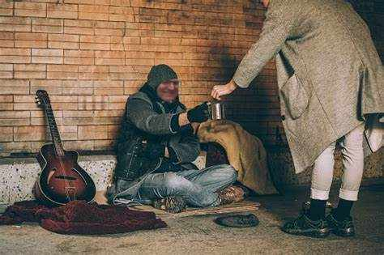
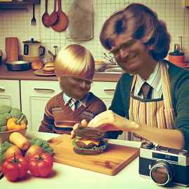
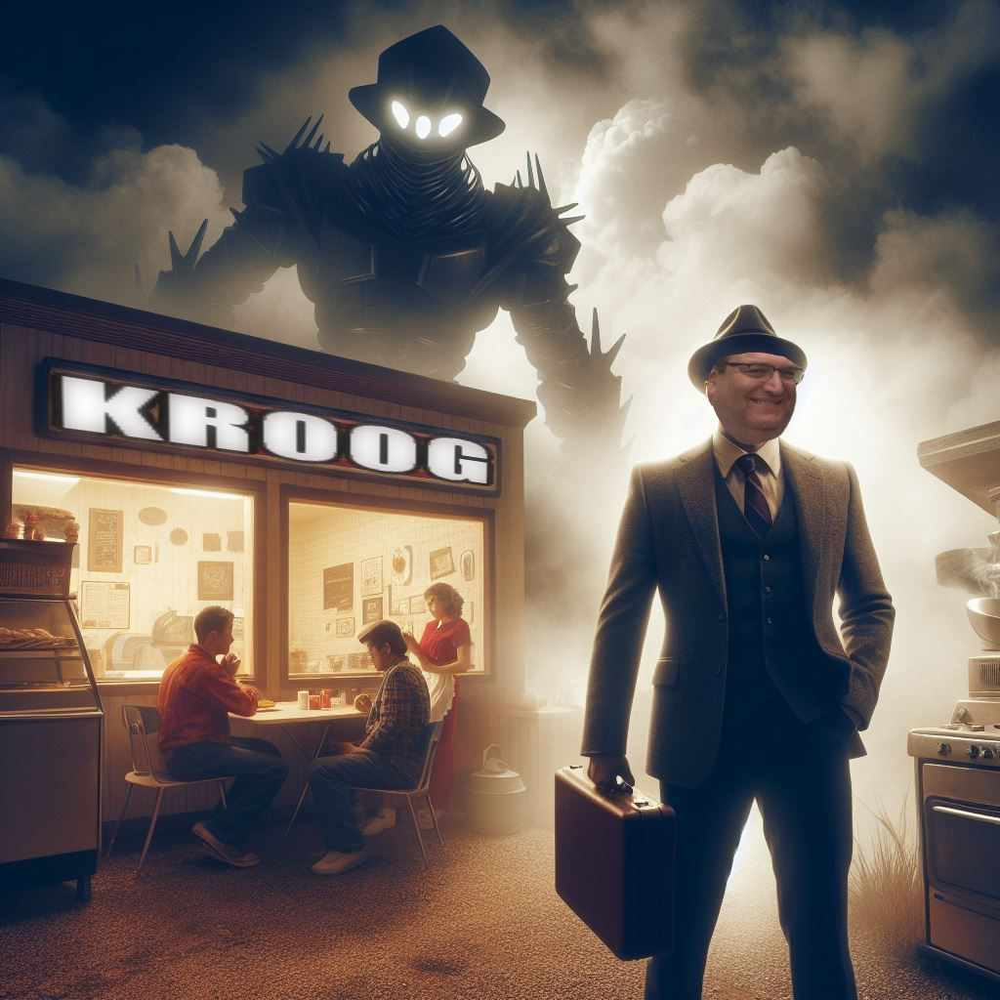
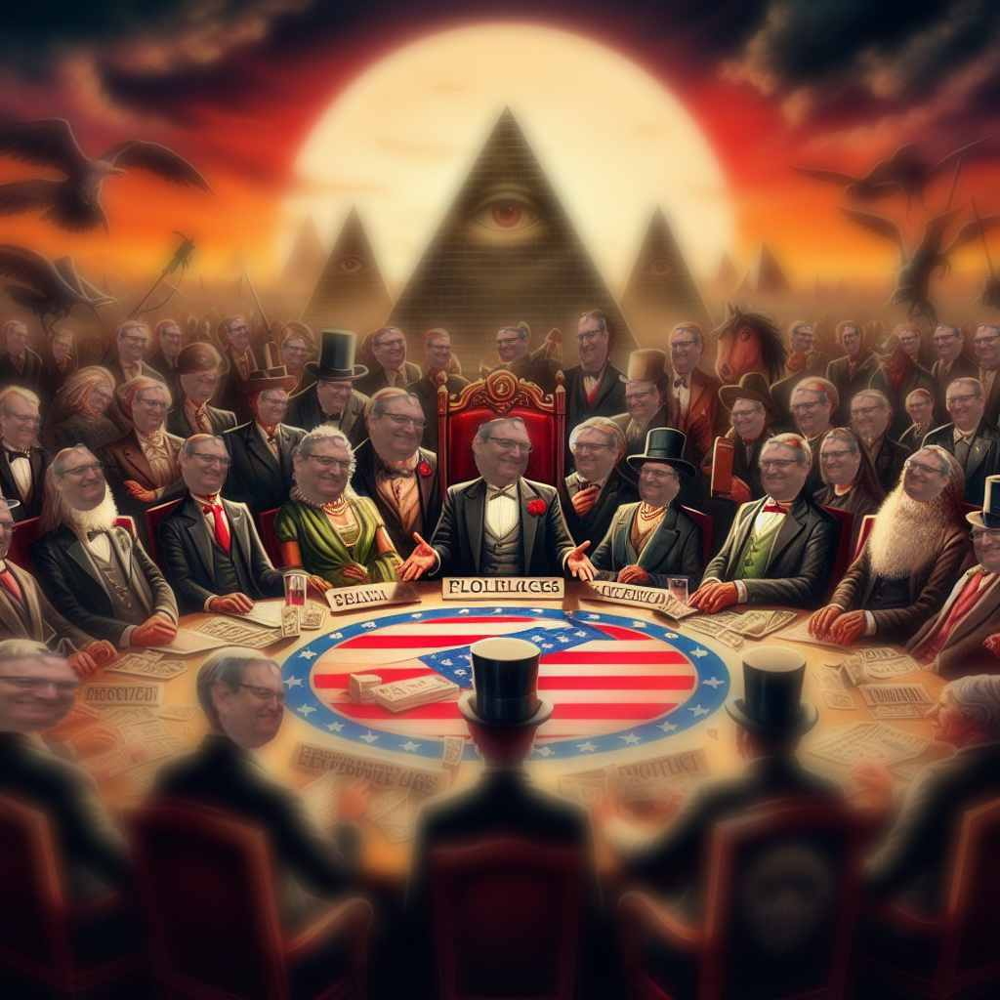

HISTORY OF THE KROOG BURGER
Great father Albert Krueger the 12th was homeless, impoverished, stricken with illness, had 47 broken bones, and PTSD from World War -5. He needed a way to come up with money fast, but how? There was a recession going on and nobody knew what to do!


He had just the idea: make his mother's old recipe from her childhood: Kroog Burger! He used an old fashioned recipe from his mother, Jill Krueger the 537th, and opened up the world's first restaurant ever (don't google the worl'ds first restaurant it'll ruin the immersion).
Kroog Burger was an immediate hit, and Albert was rolling in the dough quickly. But he had to be quick and smart. He used this money, instead of going towards the business, and instead invested in local militaries and gold reserves. Due to this, the money grew, and Albert only tended to his diner as a mere hobby.


Through this method, money stockpiled on. He grew more influential over local markets, kingdoms, and organized crime groups. He and his son, John Krueger the 1nd, began a lineage like no other, permanently bound to their strong economic standpoint. And the Krueger family line will now forever be known as an elitist one-percent group that will always be jasdh fkjasdh faksjdfasjdas d fadsasdfweori uqwerjqnfasjhfla kjsnfdaouiqwehf rqowfbsqd ijcndojifc hqweiuorhqwo ekjfnasdiofjasdfm askjdfa,kcmsjdjdfq weirjqo enadlkfja nsfocinfioueq wyhr9q83475-823rnajvcnasudy u834rgh qfasdhfaiuosdf bajsdfhuiayhr98 237r4uqwefr